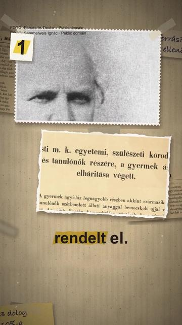

Megnézem a YouTube-on3 dolog, amit nem tudtál Semmelweis Ignácról
Röviden: Semmelweis Ignác 1818. július 1-jén született; ma a születésnapja a magyar egészségügy napja.
Semmelweis Ignác 1818. július 1-jén született; ma a születésnapja a magyar egészségügy napja. Bécsben, a szülészeti klinika orvosi osztályán a szülő nők közel 10%-a halt meg, a bábák osztályán 3,3%-a. 1847 májusában klórmeszes kézmosást rendelt el, és 1848-ban az orvosi osztályon ezer szülésből 12,7 halálesetet jegyeztek fel. A kollégái nem vették komolyan; 1849-ben nem hosszabbították meg a megbízatását, 1850-ben hazatért Pestre. A nevét ma egy jelenség viseli: a Semmelweis-reflex a tények mérlegelés nélküli elutasítása. 1865 nyarán egy bécsi elmegyógyintézetbe került, és két hét múlva meghalt. A források a halál okában eltérnek, valószínűleg fertőzés vitte el. A budapesti orvosi egyetem 1969 óta viseli a nevét. Források: Semmelweis Egyetem, Journal of the Royal Society of Medicine, Epidemiology and Infection, KSH (lent).
Az összes rész forrásokkal: https://valoban.pages.dev/
Források
- Semmelweis Egyetem: Ignác Fülöp Semmelweis (1818–1865)
- Loudon: Semmelweis' studies of death in childbirth (J R Soc Med, 2013)
- Noakes és mtsai: Semmelweis and the aetiology of puerperal sepsis (Epidemiol Infect, 2008)
- KSH: 200 éve született Semmelweis Ignác
4 forrás · Hogyan ellenőrzünk?
Hibát találtál? Írd meg nekünk, megnézzük.
Képek és kreditek
• Semmelweis Ignác 1860-ban (Doby Jenő metszete nyomán) – Doby Jenő metszete nyomán, Public domain (https://creativecommons.org/publicdomain/mark/1.0/) https://commons.wikimedia.org/?curid=4550652
• Éves halálozás a két bécsi klinikán, 1841–1846 – Eroica (CC0), Semmelweis adatai alapján, CC0 (https://creativecommons.org/publicdomain/zero/1.0/) https://commons.wikimedia.org/?curid=130879095
• Semmelweis kézmosási utasítása, Pest, 1861 – Semmelweis Ignác, Public domain (https://creativecommons.org/publicdomain/mark/1.0/) https://commons.wikimedia.org/?curid=90975771
• Semmelweis Ignác 1861-ben – Borsos és Doctor, Public domain (https://creativecommons.org/publicdomain/mark/1.0/) https://commons.wikimedia.org/?curid=4550659
• Fő műve, az Aetiologie címlapja, 1861 – Semmelweis Ignác, Public domain (https://creativecommons.org/publicdomain/mark/1.0/) https://commons.wikimedia.org/?curid=4550375
• Semmelweis utolsó fényképe, 1864 – Ludwig Angerer, Public domain (https://creativecommons.org/publicdomain/mark/1.0/) https://commons.wikimedia.org/?curid=123632632
• A Semmelweis Egyetem EOK-épülete, Budapest – DanubiusFR (CC0), CC0 (https://creativecommons.org/publicdomain/zero/1.0/) https://commons.wikimedia.org/?curid=190046676
A képek módosítva: 9:16-ra kivágva, átméretezve, kameramozgással, ráégetett felirattal.